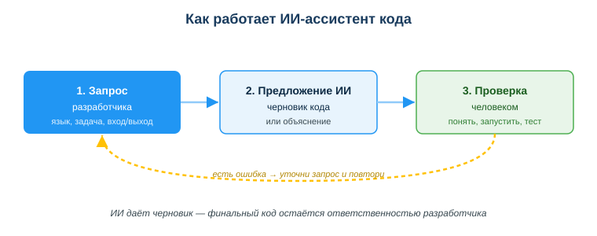
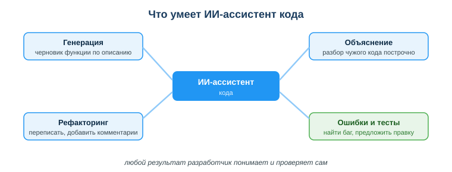

Дисциплина: Применение информационно-коммуникационных и цифровых технологий
Результат обучения: РО 2.3 — применение ИИ-инструментов в работе с кодом и данными · Объём темы: 6 часов
Квалификация: 4S06130103 «Разработчик программного обеспечения»
Расскажу, как это выглядит на самом деле — не в теории, а в первый рабочий день стажёра. Тебе дают задачу в одну строчку: «напиши функцию, которая считает сумму чётных чисел из списка, к обеду покажи». Ты открываешь ИИ-ассистента — ChatGPT, Copilot, Gemini, Claude, неважно какой — описываешь задачу одной фразой и через секунду держишь готовый черновик. Кажется, работа сделана: скопировал, вставил, сдал. Соблазн огромный, особенно когда горит срок и рядом никто не смотрит.
И вот здесь начинается настоящая развилка, которую я видел десятки раз. ИИ дал черновик, но отвечаешь за код ты — не модель. Один стажёр копирует ответ не глядя и сдаёт. Через день выясняется, что функция падает на пустом списке, считает мимо из-за одной перепутанной строки, а в соседней задаче он и вовсе вставил в запрос к чужому сервису реальный ключ доступа. Второй стажёр сидит рядом, пользуется тем же самым ассистентом — но сначала читает ответ, прогоняет его на крайних случаях, сверяет подозрительное с документацией и только потом сдаёт. Через месяц первого перестают допускать к задачам, потому что за ним всё переделывают. Второго берут в штат. Инструмент был один и тот же. Разной была культура работы с ним.
Эта тема — про то, как гарантированно оказаться на месте второго. ИИ-ассистенты уже стали обычной частью работы программиста: они пишут черновики функций, объясняют чужой код, подсказывают синтаксис, помогают разобрать ошибку, добавляют тесты и комментарии. Это реально ускоряет — но ровно настолько, насколько ты умеешь ставить задачу и проверять результат. Скажу честно, без прикрас: работодатель сегодня не ценит того, кто умеет «нажать кнопку и скопировать» — таких очередь. Ценят того, кто умеет поставить ИИ точную задачу и проверить ответ, взяв на себя ответственность за итог [3; 7]. Это уже не приятный бонус в резюме, а обязательная часть профессии.
Тема объёмная — 6 часов, — поэтому разберём её по слоям: как вообще устроена работа ассистента, что он умеет и чего не умеет, как формулировать запрос, как проверять код, что нельзя ему отдавать и кто в итоге за всё отвечает. К каждому слою — реальные запросы и код, который можно набрать и проверить самому. Не верь мне на слово: набирай и смотри, что получится у тебя.
После изучения темы ты сможешь:
Самое важное в теме — понять, что ассистент работает не «вместо тебя», а в цикле из трёх шагов, и два из трёх делаешь ты сам. Посмотри на схему «Как работает ИИ-ассистент кода» (приложение А) и разбери её по шагам.

Шаг 1 — твой запрос. Ты формулируешь задачу: язык, что нужно, вход и выход, ограничения. Это твоя работа, и именно от неё больше всего зависит результат. Здесь работает старое инженерное правило «мусор на входе — мусор на выходе»: расплывчатый запрос даёт расплывчатый ответ, и удивляться потом нечему.
Шаг 2 — предложение ИИ. Модель выдаёт черновик кода или объяснение. Ключевое слово — черновик, и я прошу тебя запомнить именно его. Ассистент не «знает», правильный ли это код; он подбирает наиболее вероятное продолжение текста по огромному количеству примеров, которые видел при обучении [3; 7]. Поэтому ответ выглядит уверенно и гладко даже тогда, когда он неверен. Уверенный тон — не признак правоты. Это просто стиль модели.
Шаг 3 — проверка человеком. Ты читаешь предложение, понимаешь логику, запускаешь, тестируешь, проверяешь безопасность. Нашёл ошибку — возвращаешься на шаг 1, уточняешь запрос и повторяешь (на схеме это жёлтая пунктирная стрелка «есть ошибка → уточни запрос и повтори»). Цикл может пройти несколько кругов, и это нормальная работа, а не признак того, что ты чего-то не умеешь.
Маленькая, но важная деталь про природу модели, без которой дальше будет непонятно. Языковая модель — это, упрощённо, очень мощный «предсказатель следующего слова». Она не запускает твой код, не видит твой проект и не проверяет факты. Отсюда растут все её сильные и слабые стороны разом: типовой код она пишет прекрасно (его много в обучающих данных), а на редком, специфичном или свежем легко ошибается (его мало или нет вовсе). Понял это — и перестаёшь удивляться, почему «такой умный ИИ» путается в простой детали. Он не умный и не глупый. Он вероятностный.
Теперь разберём конкретные задачи, которые ассистент решает хорошо. Посмотри на схему «Что умеет ИИ-ассистент кода» (приложение Б): вокруг центра — четыре основных умения. Пройдём по каждому с живым примером — с текстом запроса и кодом ответа.

1. Генерация — черновик функции по описанию.
Ты описываешь задачу словами, ассистент пишет код. Реальный запрос:
Напиши на Python 3 функцию sum_even, которая принимает список чисел
и возвращает сумму чётных. Без сторонних библиотек, добавь docstring
и короткие комментарии.Возможный ответ:
def sum_even(numbers):
"""Возвращает сумму чётных чисел из списка."""
total = 0
for n in numbers:
if n % 2 == 0: # чётное, если остаток от деления на 2 равен 0
total += n
return totalЧто видим: аккуратный рабочий черновик — цикл, проверка чётности через остаток, накопление суммы. Почему так: задача типовая, подобного кода в обучающих данных море, поэтому модель выдаёт его уверенно и почти всегда корректно. Где спотыкаются: на слове «рабочий». «Рабочий» здесь значит только «запускается на обычном списке», а не «проверенный». Что делать с ним дальше — вся суть раздела 4.4.
2. Объяснение — разбор чужого кода построчно.
Ты встречаешь незнакомую строку в чужом проекте и просишь: «Объясни построчно, что делает этот код». Это выручает, когда разбираешь старый код или библиотеку. Например, для строки:
result = [x * 2 for x in data if x > 0]ассистент объяснит: это списковое включение (list comprehension); оно проходит по data, берёт только положительные элементы (if x > 0) и для каждого кладёт в новый список удвоенное значение (x * 2). Что видим: конструкцию, которая раньше пугала одной строкой, разложили на понятные части. Почему это ценно: объяснение — самое безопасное применение ассистента, потому что оно не идёт в твой код напрямую. Где всё же осторожность: объяснение — тоже текст модели, и в редких конструкциях оно может слегка соврать. Понял идею — проверь на живом примере: подставь data = [-1, 3, 0, 5] и посмотри, получится ли [6, 10].
3. Рефакторинг — переписать понятнее, добавить комментарии.
Ассистент умеет улучшить структуру кода, не меняя поведения: дать осмысленные имена, убрать повторы, добавить docstring. Пример «до» — код, который работает, но читать его больно:
def f(l):
s = 0
for i in l:
s = s + i
return sЗапрос: «Сделай рефакторинг: понятные имена, docstring, по возможности короче». Ответ «после»:
def total(numbers):
"""Возвращает сумму всех чисел списка."""
return sum(numbers)Что видим: поведение то же, но читается в разы легче, и вместо ручного цикла — встроенная sum. Почему это правильно: короче, понятнее, меньше места для ошибки. Где ловушка: рефакторинг меняет вид кода, а значит, есть риск нечаянно поменять и поведение. Железное правило: после рефакторинга обязательно прогони тесты и убедись, что на тех же входах результат прежний. Без тестов «переписал понятнее» легко превращается в «переписал и сломал».
4. Поиск ошибок и тесты — найти баг и предложить правку.
Даёшь ассистенту код с ошибкой — он находит проблему и объясняет. Он же пишет тесты. Запрос: «Напиши тесты для функции sum_even, включая пустой список и список без чётных». Ответ:
def test_sum_even():
assert sum_even([1, 2, 3, 4]) == 6 # 2 + 4
assert sum_even([]) == 0 # пустой список
assert sum_even([1, 3, 5]) == 0 # нет чётных
assert sum_even([-2, -4]) == -6 # отрицательные чётные
print("Все тесты пройдены")
test_sum_even()Что видим: набор проверок, где кроме обычного случая есть пустой список, список без чётных и отрицательные. Почему это полезно вдвойне: тесты не только ловят баги, но и заставляют тебя самого подумать о крайних случаях ещё до того, как код уйдёт в проект. Где не расслабляться: тесты тоже пишет модель, и она может пропустить важный случай или ошибиться в ожидаемом значении. Читай каждую строку теста так же придирчиво, как саму функцию: посчитай в уме, что должно получиться, и сверь с тем, что написано в assert.
Качество ответа процентов на восемьдесят определяется качеством запроса — это не фигура речи, это то, что видишь каждый день. Сравни два запроса к одной и той же задаче и почувствуй разницу.
Плохо: «напиши функцию». Что видим: ассистент не знает ни языка, ни что считать, ни как принимать данные. Что будет: он угадает — язык, формат, имя — и часто угадает не то, что тебе нужно. Ты получишь красивый код не той задачи.
Хорошо: «Напиши на Python 3 функцию, которая принимает список чисел и возвращает сумму чётных; без сторонних библиотек; добавь короткие комментарии и пример вызова».
Разница в четырёх элементах, которые стоит указывать всегда:
Python 3, JavaScript. Один и тот же алгоритм по-разному пишется в разных языках и даже версиях; не укажешь — модель выберет за тебя, и не факт что то, что стоит у тебя.Держи в голове удобный шаблон — по нему запрос собирается за полминуты:
Напиши на <язык и версия> функцию <имя>, которая <что делает>.
Вход: <что подаётся>. Выход: <что возвращается>.
Ограничения: <условия>.
Добавь: <комментарии / docstring / пример вызова / тесты>.Чем конкретнее каждый слот, тем меньше кругов цикла из 4.1 понадобится и тем меньше потом переделывать. И ещё приём, который экономит уйму времени: если первый ответ не подошёл — не начинай заново, уточняй. «Сделай без библиотек», «учти пустой список», «переименуй переменные понятнее». Ассистент держит контекст диалога и дорабатывает свой же прошлый ответ, а не пишет с нуля. Диалог с ним — это правки по кругу, а не один выстрел.
Одна честная оговорка. Точный запрос повышает шансы на хороший ответ, но не отменяет проверку. Даже на идеально сформулированный запрос модель может выдать код с пропущенным крайним случаем или выдуманной функцией. Хороший промпт сокращает работу на шаге 3, но не заменяет её.
Совет «проверяй код» звучит банально, но за ним стоит конкретный порядок из четырёх шагов. Это и есть шаг 3 цикла из 4.1, развёрнутый подробно. Разберём каждый шаг на примере функции деления — её ИИ предлагает чаще всего, и на ней же чаще всего обжигаются.
Допустим, ты попросил функцию деления, и ассистент выдал:
def divide(a, b):
return a / bШаг 1. Пойми, что делает каждая строка. Здесь всё просто: функция возвращает результат деления a на b. Правило жёсткое: если ты не можешь объяснить код своими словами — ты его не понял, а значит, не починишь, когда он сломается посреди ночи в проде. Понимание — это не формальность и не занудство преподавателя. Это твоя личная страховка на будущее.
Шаг 2. Запусти и проверь на нормальных данных. Вопрос не «завелось ли вообще», а «правильный ли результат»:
print(divide(10, 2)) # 5.0 — верно
print(divide(7, 2)) # 3.5 — верноЧто видим: на обычных числах всё верно. Почему это ещё не победа: нормальные данные проходят почти всегда — иначе код бы вообще не приняли. Настоящие проблемы прячутся не здесь, а на краях.
Шаг 3. Проверь крайние случаи. Это самый важный шаг, и именно его пропускают чаще всего. Подай то, на чём код обычно ломается: ноль, пустой ввод, отрицательные, неверный тип.
print(divide(10, 0)) # ZeroDivisionError — программа падает!Что видим: деление на ноль роняет программу. Почему ИИ это пропустил: он выдал «правильный в общем» код, но не знает, что в твоих данных делитель бывает нулём — у него нет доступа ни к твоим данным, ни к твоему контексту. Это не злой умысел модели, это её слепота. Исправляем:
def divide(a, b):
"""Делит a на b. При b == 0 возвращает None и сообщает об ошибке."""
if b == 0:
print("Ошибка: деление на ноль")
return None
return a / bПроверяем снова:
print(divide(10, 0)) # Ошибка: деление на ноль; вернётся None — программа не падаетЧто видим: теперь на нуле программа не рушится, а сообщает и возвращает None. Это минимальная защита; в боевом коде часто вместо print возбуждают исключение с понятным сообщением, но принцип один — крайний случай обработан осознанно.
Шаг 4. Проверь безопасность и сверься с документацией. Нет ли в коде пароля в открытом виде, незащищённого запроса к базе, утечки данных? И существуют ли вообще использованные функции, так ли они работают? Сомнения по функции проверяй не у ИИ (он же и мог её выдумать), а в официальной документации — для Python это docs.python.org [4]. Этот шаг закрывает тебя от галлюцинаций (см. 4.5).
Иногда ассистент выдаёт код, который выглядит безупречно, но использует то, чего не существует. Это называется галлюцинацией [7]. Причина прямо в природе модели (см. 4.1): она генерирует правдоподобный текст, а не проверенный факт. Слово «правдоподобный» тут ключевое — выдумка выглядит убедительно, потому что модель как раз и училась звучать убедительно.
Классический пример, на который попадаются едва ли не все. Ты спрашиваешь: «есть ли в Python встроенная функция is_prime для проверки простого числа?» Ассистент уверенно отвечает: «да, конечно, встроенная функция is_prime()» — и приводит код:
if is_prime(7):
print("простое")Что видим: красивый, короткий, «очевидно правильный» код. Почему он врёт: такой встроенной функции в Python нет — модель «додумала» её, потому что подобные примеры часто мелькают в учебных задачах, а называться она «должна» именно так. Вставишь не проверяя — получишь:
NameError: name 'is_prime' is not definedГде спотыкаются: на слове «встроенная». Звучит правдоподобно, название удобное — рука сама тянется вставить. Именно на удобных, гладких, «слишком к месту» названиях модель врёт чаще всего.
Как ловить галлюцинации на практике:
NameError, это самый дешёвый детектор;Галлюцинации — не повод бросать ИИ, а ещё один железный довод за обязательную проверку из 4.4. Особенно осторожно относись к выдуманным именам функций, несуществующим версиям библиотек и «ссылкам на документацию», которые никуда не ведут: их модель сочиняет с тем же уверенным лицом.
Держи в голове простую вещь: публичный ИИ-сервис — это посторонняя сторона. Всё, что ты вставляешь в запрос, уходит на чужие серверы, и ты не контролируешь, что с этим будет дальше. Поэтому есть вещи, которые передавать нельзя категорически.
Секреты. Это пароли, ключи API, токены доступа, строки подключения к базе. Пример того, как делать нельзя:
# ПЛОХО: реальный ключ прямо в запросе к ИИ
api_key = "sk-live-9d8f7a6b5c4e3210realsecretkey" # никогда не отправляй такое ИИПочему это провал: попади такой ключ в чужой сервис или чужие руки — им воспользуются от твоего имени, а счёт за чужие запросы придёт тебе. И «я же только спросить» тут не оправдание. Правильно — заменить секрет на очевидную заглушку:
# ХОРОШО: вместо настоящего ключа — очевидная заглушка
api_key = "YOUR_API_KEY" # подставь свой ключ локально, ИИ его видеть не долженЧто видим: смысл вопроса не изменился («как настроить клиента с ключом»), а секрет остался у тебя. Ровно так и надо.
Персональные данные. Это сведения, по которым можно опознать человека: ФИО, ИИН, номер телефона, адрес, фото, данные документов. Тут типичное заблуждение: студенты думают, будто персональные — это только ФИО. Нет: ИИН и телефон — тоже персональные данные, и по одному ИИН человек опознаётся однозначно. В Казахстане их обработку регулирует Закон РК «О персональных данных и их защите» от 21.05.2013 № 94-V [2], а сферу информатизации в целом — Закон РК «Об информатизации» № 418-V [1]. Загрузить реальную выгрузку клиентов (ФИО, ИИН, телефоны) в публичный ИИ, «чтобы он быстро посчитал», — это передача персональных данных посторонней стороне без оснований, то есть утечка и нарушение закона. «Срочно» и «файл маленький» ничего не меняют — закон таких оговорок не знает.
Как работать безопасно — обезличивание. Прежде чем отдать данные ИИ, приведи их к виду, по которому нельзя опознать человека:
| Поле | Реальные данные (нельзя отдавать ИИ) | Обезличенные (можно) |
|---|---|---|
| Имя | Алия Сериковна Ж. | Клиент 1 |
| ИИН | 990101400123 | — (удалено) |
| Телефон | +7 701 234 56 78 | — (удалено) |
| Сумма заказа | 14 500 ₸ | 14 500 ₸ |
Что видим: для задачи «посчитать средний чек» осталось ровно нужное — сумма, — а опознать человека уже нельзя. Это принцип дата-минимизации: отдавать сервису только необходимый минимум и ничего сверх. Правило на всякий случай: если обезличить нельзя (а из данных не выкинуть то, что и нужно посчитать) — не отправляй их во внешний сервис вообще. Для отладки бери выдуманные тестовые данные — ноль риска, тот же результат.
Из всего предыдущего следует главный профессиональный принцип темы, и я хочу, чтобы он остался с тобой после всех примеров: за финальный код, данные и решения отвечаешь ты, даже если фрагмент сгенерировал ИИ. Инструмент нельзя «обвинить». Когда код упал в проде, утёк ключ или посчиталось неправильно — юридические, профессиональные и репутационные последствия наступают для человека, который применил результат, а не для модели. «Так мне ИИ написал» — не аргумент ни перед заказчиком, ни перед законом. Этот же принцип закрепляет Рамка ИИ-компетенций ЮНЕСКО для учащихся (2024): в центре — человек, его ответственность и критическое мышление, а не технический навык «нажать кнопку» [7].
Разница, которую я прошу унести из темы, укладывается в одну таблицу:
| «ИИ усиливает меня» | «ИИ решает за меня» |
|---|---|
| читаю предложение, понимаю логику, осознанно использую | вставляю не читая, сдаю как есть |
| тестирую крайние случаи и безопасность | доверяю, потому что «выглядит правильно» |
| решение и ответственность — на мне | переложил решение на инструмент, но отвечаю всё равно я |
Обрати внимание на нижнюю строку правой колонки: переложить решение на инструмент можно, а ответственность — нет. Она всё равно остаётся на тебе. Поэтому граница проходит не по тому, использовал ли ты ИИ (использовать — нормально и полезно), а по тому, сохранил ли ты понимание и контроль. Сведём всё в единый алгоритм ответственной работы, которым можно пользоваться с первого рабочего дня:
Пример 1 — деление на ноль (главный кейс урока). Ты попросил функцию деления, ИИ выдал return a / b. Код запускается на «хороших» числах, ты обрадовался и сдал. На первом же тесте с делителем 0 программа падает с ZeroDivisionError.
Разбор: виноват не ИИ, а пропущенный шаг 3 проверки — крайние случаи. Правильно — прогнать на нуле, пустом вводе, отрицательных и добавить обработку, как в 4.4. ИИ дал «общий» код, не зная, что в твоих данных бывает ноль; знать это — твоя работа, а не его.
Пример 2 — несуществующая функция. Ты спросил про is_prime(), ИИ уверенно подтвердил, что она встроенная, ты вставил вызов — получил NameError.
Разбор: это галлюцинация (4.5). Любую «встроенную» функцию проверяй в docs.python.org [4] или просто запусти — несуществующее имя мгновенно выдаст ошибку. Чем удобнее звучит название, тем внимательнее проверяй.
Пример 3 — утечка ключа. Чтобы ИИ «помог с настройкой», студент вставил в запрос реальный ключ API сервиса. Через неделю по ключу прошли чужие платные запросы, счёт выставили ему.
Разбор: секреты нельзя передавать публичному ИИ (4.6). Правильно — заменить ключ на заглушку YOUR_API_KEY, а настоящий держать только локально. «Я же только спросил» тут не спасает — ключ уже ушёл на чужие серверы в момент отправки.
Пример 4 — рефакторинг, который сломал поведение. Студент попросил «переписать покороче» рабочую функцию, вставил ответ и сдал, не запустив тесты. Оказалось, ассистент заодно поменял граничное условие, и на пустом списке функция стала падать.
Разбор: рефакторинг меняет вид кода, поэтому после него обязательна проверка (4.2, 4.4). Правило простое: переписал — прогони те же тесты, что и до, и убедись, что результат прежний. «Покороче» без проверки легко превращается в «покороче и с новым багом».
Основная и дополнительная литература (из literatura.md):
Нормативные источники РК:
Официальная документация ИИ-ассистентов:
Документация для проверки кода:
Международные рамки:
assets/26_shema-rabota-assistenta.svg. Три шага: запрос разработчика → предложение ИИ (черновик) → проверка человеком; жёлтая пунктирная стрелка показывает возврат при ошибке («уточни запрос и повтори»). Подпись закрепляет главное: финальный код — ответственность разработчика.assets/26_shema-chto-umeet.svg. Вокруг центра — четыре умения: генерация, объяснение, рефакторинг, поиск ошибок и тесты. Подпись: любой результат разработчик понимает и проверяет сам.Материал подготовлен на основе урока темы (urok.md) и приведённых в конце источников; он расширяет и углубляет содержание урока для самостоятельного изучения. Источники приведены главами и ссылками (без номеров страниц); нормативные акты — с реквизитами.
Разработал: преподаватель ИКТ, магистр управления и информационной безопасности Калиаскаров Д.А.
Материал одобрен к использованию в обучении решением Педагогического совета ТОО «Колледж Хекслет Казахстан».